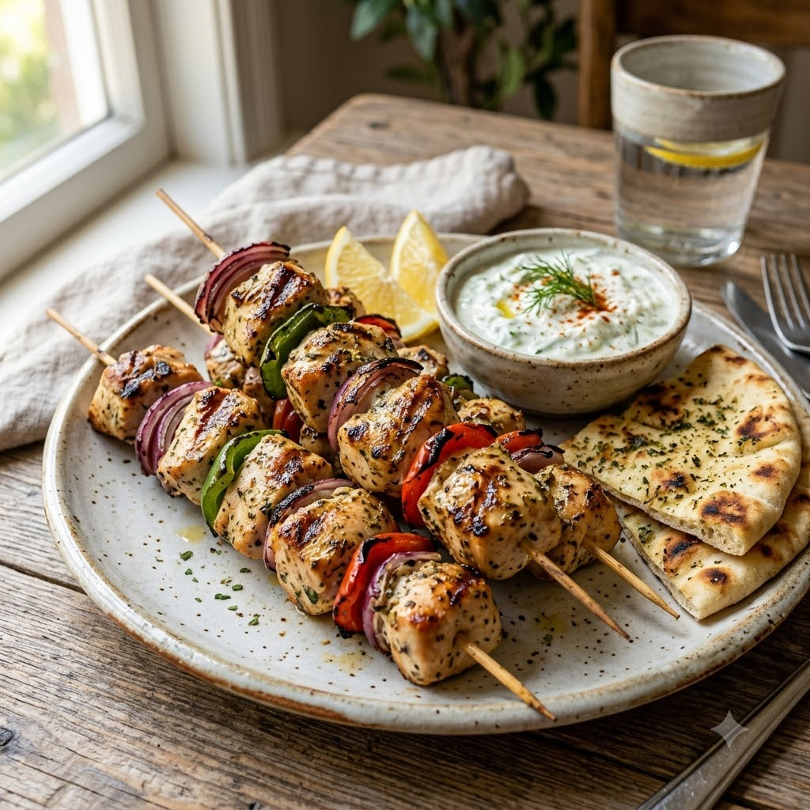

Chicken Souvlaki Skewers

Chicken Souvlaki Skewers
Airfryer – Grill 200°C 15 min — Serves 4
Gluten-Free • High-Protein • Mediterranean • Everyday
Prep ahead: Marinate the chicken for at least 30 minutes (up to overnight) for the best flavour.
Ingredients
- 500g boneless chicken, cubed
- 3 tbsp olive oil
- 2 tbsp lemon juice
- 2 cloves garlic, minced
- 1 tbsp dried oregano
- Salt & pepper to taste
Method
1Preheat: Preheat the Airfryer to 200°C for 4 minutes before adding the food to the basket.
2Mix olive oil, lemon juice, garlic, oregano, salt and pepper; marinate the chicken for at least 30 minutes.
3Skewer or arrange the chicken in the basket.
4Grill at 200°C for 15 minutes, turning once, until charred at the edges and cooked through.
5Serve with pita, tzatziki and salad.